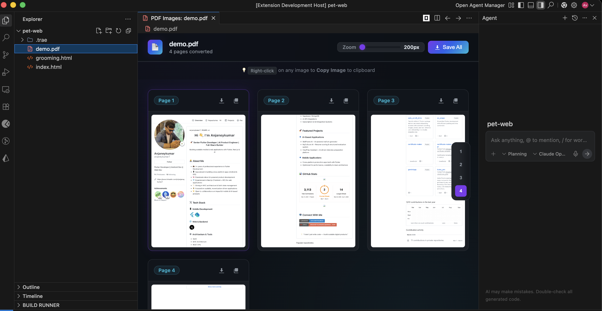

Open any PDF directly in VS Code and browse pages as a beautiful image gallery. Copy, zoom, navigate — all without leaving your editor.

No external tools. No browser tabs. Just click a PDF and start working.
PDF pages rendered as a responsive image grid. Browse visually instead of scrolling through text.
Copy any PDF page as an image to your clipboard with a single right-click. Perfect for presentations & docs.
Zoom in up to 300% to inspect fine details. Smooth scaling with crisp rendering at every level.
Jump to any page instantly with built-in navigation. Works seamlessly with large multi-page documents.
Click any .pdf file and it opens directly as a gallery. Registers as a custom editor — no commands needed.
Export individual pages or the entire PDF as high-quality PNG images with one click.
Search for "PDF to Images" in the VS Code marketplace and hit install.
Click any .pdf file in your workspace. It opens as a gallery automatically.
Right-click to copy, use zoom controls, or save pages as images. Done.
Install PDF to Images and view your PDFs the way they were meant to be seen — fast, visual, and integrated.